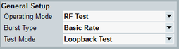

General Setup
The parameters displayed in the following section depend on the selected operating mode and burst type.
Option R&S CMW-KS610 is required for BR and EDR.
Option R&S CMW-KS611 is required for LE 1M PHY. Option R&S CMW-KS721 is also required for LE 2M PHY and LE coded PHY.
Option R&S CMW-KS602 is required for audio profiles.

General setup
The settings are the same as in the configuration tree, see "CMW Role".